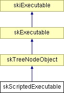

Main Page Class Hierarchy Alphabetical List Compound List File List Compound Members
skScriptedExecutable Class Reference
This class provides an executable whose additional fields and methods are taken from a TreeNode file - most of the behaviour is defined in the base class skTreeNodeObject.
More...
#include <skScriptedExecutable.h>
Inheritance diagram for skScriptedExecutable::

List of all members.
Public Methods |
|
| skScriptedExecutable (const skString &filename) |
| | Constructor - takes the name of the file from which the treenode will be loaded.
|
|
virtual | ~skScriptedExecutable () |
| | Virtual destructor - so that derived class destructors will be called.
|
Detailed Description
This class provides an executable whose additional fields and methods are taken from a TreeNode file - most of the behaviour is defined in the base class skTreeNodeObject.
The documentation for this class was generated from the following files:
Generated on Tue Nov 20 17:56:22 2001 for Simkin by
 1.2.11.1 written by Dimitri van Heesch,
© 1997-2001
1.2.11.1 written by Dimitri van Heesch,
© 1997-2001